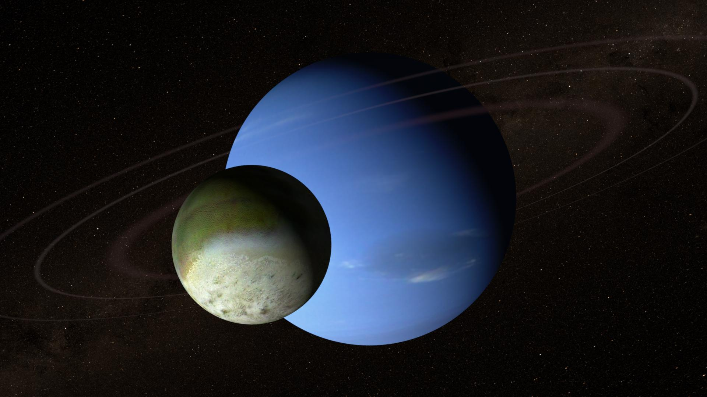
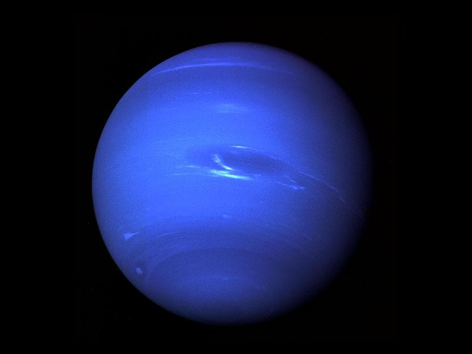
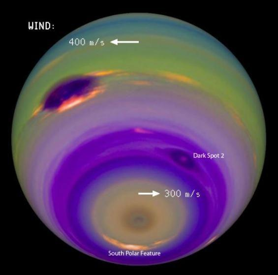
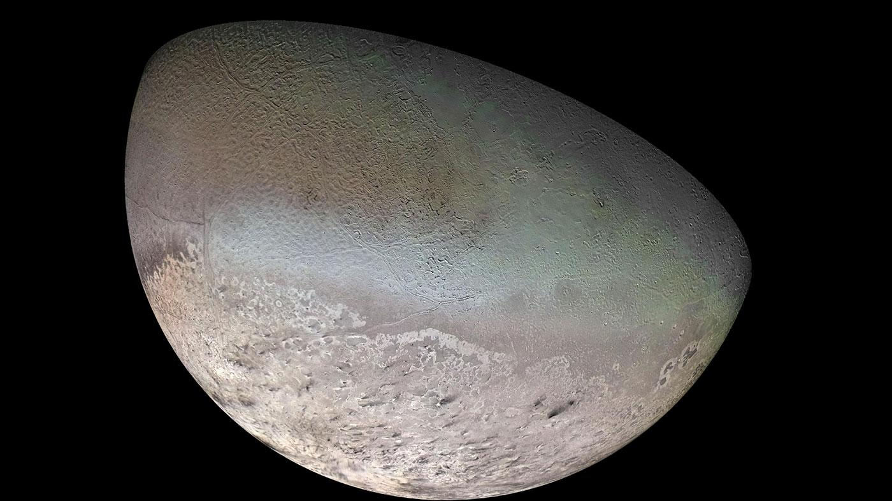
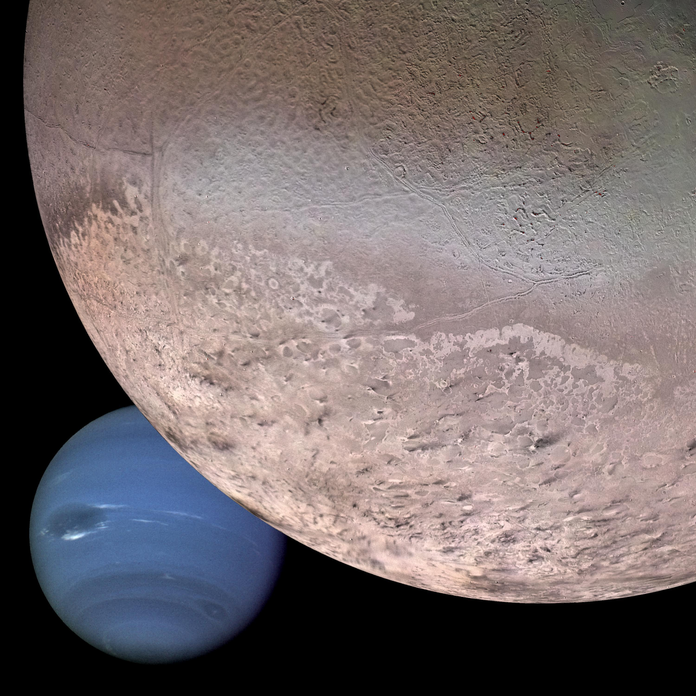
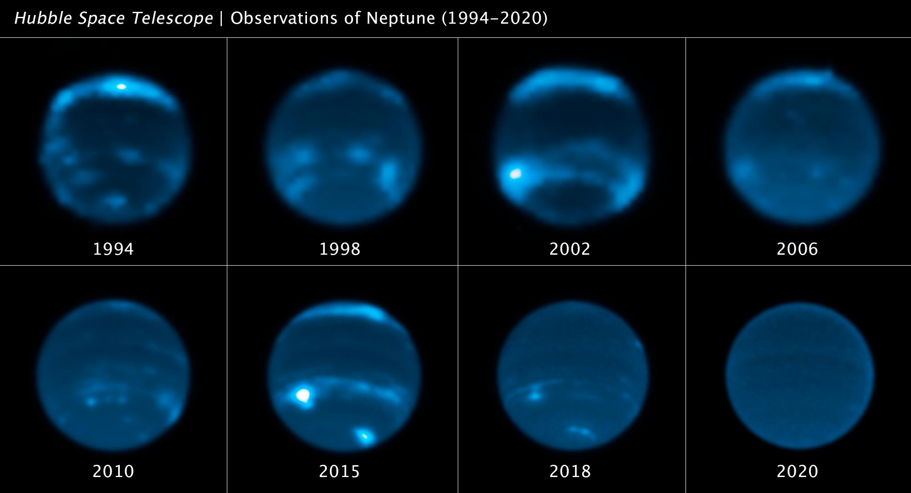

Triton
Triton is a large moon that orbits in the opposite direction of Neptune’s rotation. It has geysers that erupt nitrogen gas, making it one of the most unusual moons.
Neptune is the eighth and farthest planet from the Sun in the solar system.
It is a cold, distant world known for its deep blue color and extremely powerful winds. Neptune is classified as an ice giant, meaning it is made up of icy materials like water, ammonia, and methane, along with gases.
Discovered in 1846, Neptune is unique because it was predicted mathematically before it was actually observed through a telescope. Its discovery marked a major achievement in astronomy.
Discover More ›
Neptune — the farthest planet and a deep blue ice giant.

Neptune’s striking blue color comes from methane in its atmosphere.
Neptune’s striking blue color comes from methane gas in its atmosphere, which absorbs red light and reflects blue light.
Its atmosphere appears deep blue with swirling clouds, dynamic and constantly changing, and filled with storms and high-speed winds.
Neptune has the strongest winds in the solar system, reaching speeds of up to 2,100 km/h.
Massive storms form and disappear over time. Neptune is known for features like the Great Dark Spot, a giant storm similar to Jupiter’s Red Spot.
Its winds move faster than the speed of sound on Earth. Despite being far from the Sun, Neptune is highly active and energetic.

Neptune has the strongest winds in the solar system.

Neptune is extremely cold but still has active weather.
Neptune is extremely cold, with an average temperature around -200°C.
Its atmosphere is mainly made of hydrogen, helium, and methane.
Even with such low temperatures, internal heat from the planet drives its weather system, making it surprisingly active.
As an ice giant, Neptune has a thick atmosphere, a mantle made of icy materials such as water, ammonia, and methane, and a possible rocky core.
Unlike Earth, Neptune does not have a solid surface you could stand on.

Neptune is an ice giant without a solid surface.
Neptune has 14 known moons and a faint ring system made of dust and ice particles.

Triton is a large moon that orbits in the opposite direction of Neptune’s rotation. It has geysers that erupt nitrogen gas, making it one of the most unusual moons.
Neptune has 14 known moons orbiting around it.
Neptune has a faint ring system made of dust and ice particles.
Triton’s backward orbit makes Neptune’s moon system especially interesting.
One day on Neptune is about 16 hours.
One year on Neptune is about 165 Earth years.
Because it is so far from the Sun, Neptune takes a very long time to complete one orbit.
Neptune has the longest year among the planets.
Farthest planet from the Sun
Strongest winds in the solar system
Extremely cold temperatures
Deep blue atmosphere due to methane
Has 14 moons, including Triton
Has faint rings
Longest year among planets
Neptune is a planet of extreme distance and powerful energy. Even though it receives very little sunlight, it remains one of the most dynamic planets due to its strong internal heat and fast winds.
Its discovery through mathematical prediction makes it historically important, and its unique features, like supersonic winds and unusual moons, continue to make it a fascinating subject for scientific study.
A video exploring the planets in our solar system.